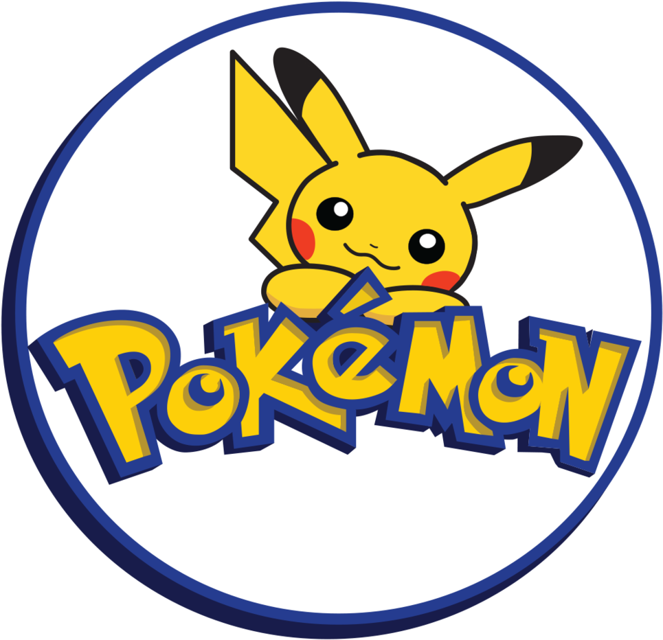
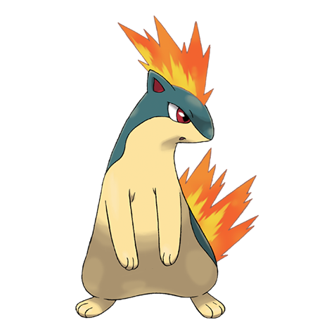
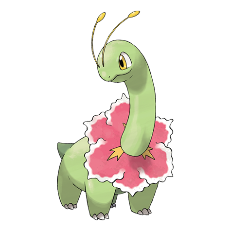

Blastoise
Blastoise es un Pokémon de tipo Agua introducido en la primera generación. Es la evolución final de Squirtle y se caracteriza por su caparazón resistente y sus cañones de agua que emergen de su espalda.


Blastoise es un Pokémon de tipo Agua introducido en la primera generación. Es la evolución final de Squirtle y se caracteriza por su caparazón resistente y sus cañones de agua que emergen de su espalda.

Pikachu es un Pokémon de tipo Eléctrico introducido en la primera generación. Es el Pokémon más popular de la serie y se caracteriza por su pelaje amarillo, orejas triangulares y una cola que emite electricidad.

Charizard es un Pokémon de tipo Fuego/Volador introducido en la primera generación. Es la evolución final de Charmander y se caracteriza por su cuerpo grande, alas poderosas y su capacidad para volar a gran velocidad.

Bulbasaur es un Pokémon de tipo Planta/Veneno introducido en la primera generación. Es el Pokémon inicial de la serie y se caracteriza por su caparazón verde y su cola con una semilla.

Squirtle es un Pokémon de tipo Agua introducido en la primera generación. Es el Pokémon inicial de la serie y se caracteriza por su caparazón azul y su cola con una semilla.

Charmander es un Pokémon de tipo Fuego introducido en la primera generación. Es el Pokémon inicial de la serie y se caracteriza por su cola con una llama.

Mew es un Pokémon de tipo Psíquico introducido en la primera generación. Es un Pokémon muy raro y se caracteriza por ser el Pokémon más poderoso de la serie.

Mewtwo es un Pokémon de tipo Psíquico introducido en la primera generación. Es un Pokémon muy raro y se caracteriza por ser el Pokémon más poderoso de la serie.

Quilava es un Pokémon de tipo Fuego introducido en la segunda generación. Es la evolución de Cyndaquil y se caracteriza por su cuerpo cubierto de llamas y su cola con una llama.

Cyndaquil es un Pokémon de tipo Fuego introducido en la segunda generación. Es el Pokémon inicial de la segunda generación y se caracteriza por su cuerpo cubierto de llamas y su cola con una llama.

Meganium es un Pokémon de tipo Planta introducido en la segunda generación. Es la evolución de Bayleef y se caracteriza por su cuerpo grande, hojas en su cola y su capacidad para emitir un aroma dulce.

Bayleef es un Pokémon de tipo Planta introducido en la segunda generación. Es la evolución de Chikorita y se caracteriza por su cuerpo grande, hojas en su cola y su capacidad para emitir un aroma dulce.

Chikorita es un Pokémon de tipo Planta introducido en la segunda generación. Es el Pokémon inicial de la segunda generación y se caracteriza por su cuerpo grande, hojas en su cola y su capacidad para emitir un aroma dulce.